Historical Places of China
1. Great Wall of China, Beijing

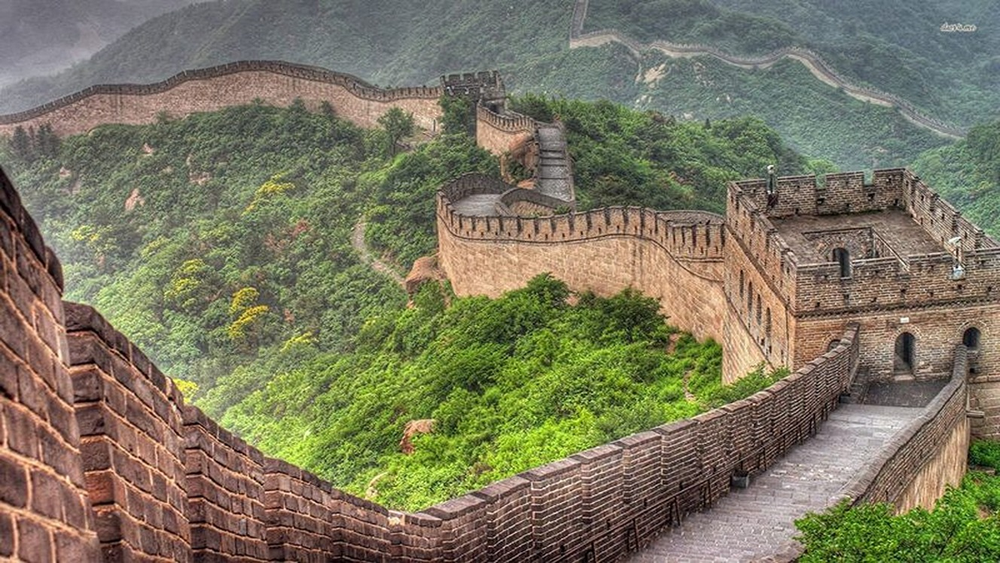
Known as one of the most appealing and famous monuments of China, this fortress of Jaipur, the Amber Fort is one of those noteworthy places in Jaipur that you shouldn’t miss. It was developed by Sawai Jai Singh and addresses the ideal illustration of extraordinary design and insides. The fortress offers numerous attractions to its guests including Sheesh Mahal, Jal Mandir, Diwan-I-Aam, and Khaas which leaves the guests entranced with its magnificence. Even though I belong to the Pink City, having visited the Amber Fort many times, I still find it a new mystery to reveal every time I go there. No wonder it is among the top historical monuments of China.
2. The Forbidden City, Beijing
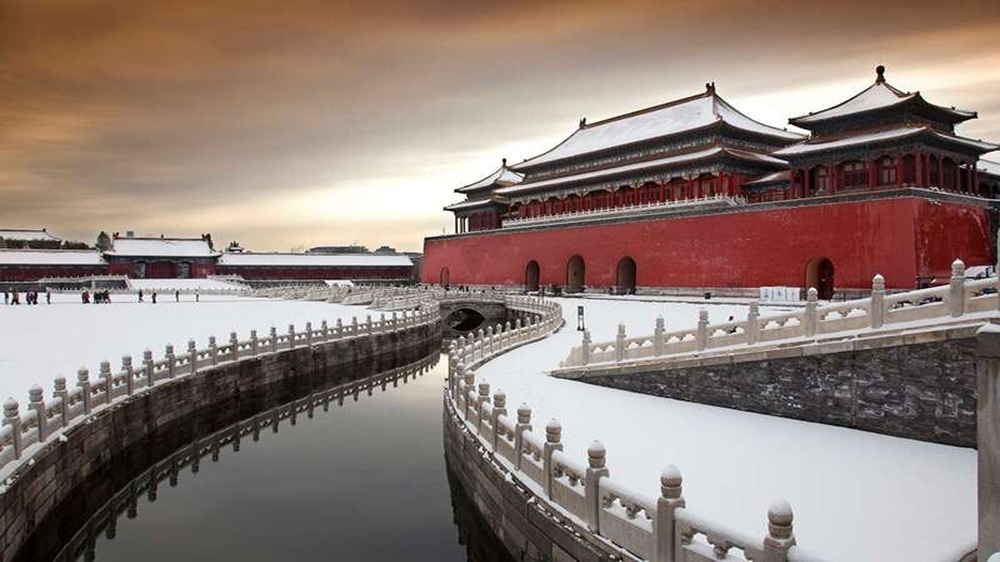
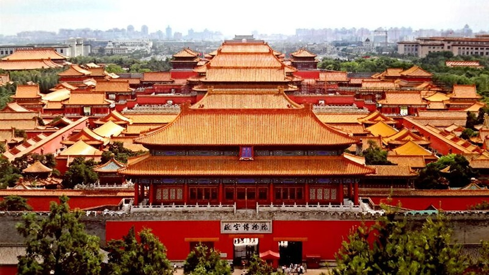
This is the world’s largest imperial palace, which has served both the Ming and Qing Dynasty until 1912. It is said there are 999 rooms in the palace, which is considered the foremost example of Chinese architecture and design. Located on the central axle of Beijing city, it is the culturalcenter of China. The Palace Museum, along with Jewelry House and Clock and Watch House, is worth a visit. The entrance tickets are booked in advance via its website with ID or passports. Please be noted that there are lots of visitors throughout the year.
3. Terracotta Warriors, Xi’an, Shaanxi Province
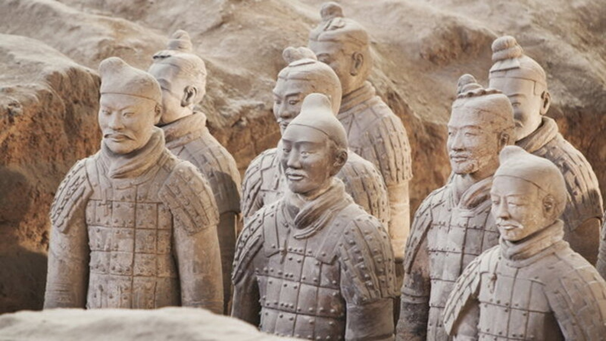
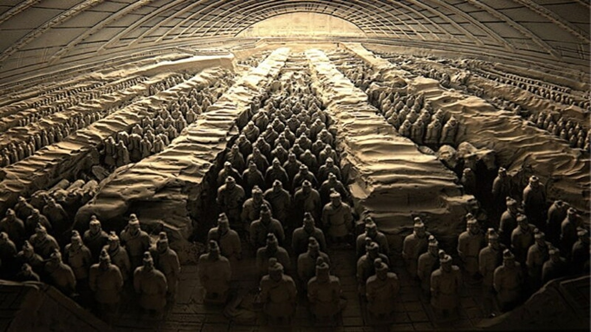
This must be the most well-known tourist site in China as you can see it in almost all China-related posters and pictures. The clay soldiers have been buried underground for over 2, 000 years until 1974 when it was discovered by a local farmer digging to build a well. For visitors who favor history, the Terracotta Warriors Museum is a must-see. To build such a huge project in 220BC still fathoms modern scientists. Here you will discover the history of the Qin Dynasty and the first emperor Qin Shihuang. As you visit the tomb, you will notice that each clay figures differ in posture, appearance, and hairstyle. For those who are interested in the backscene, arrangements can be made to learn how archaeologists restore these figures.
4. Potala Palace, Tibet
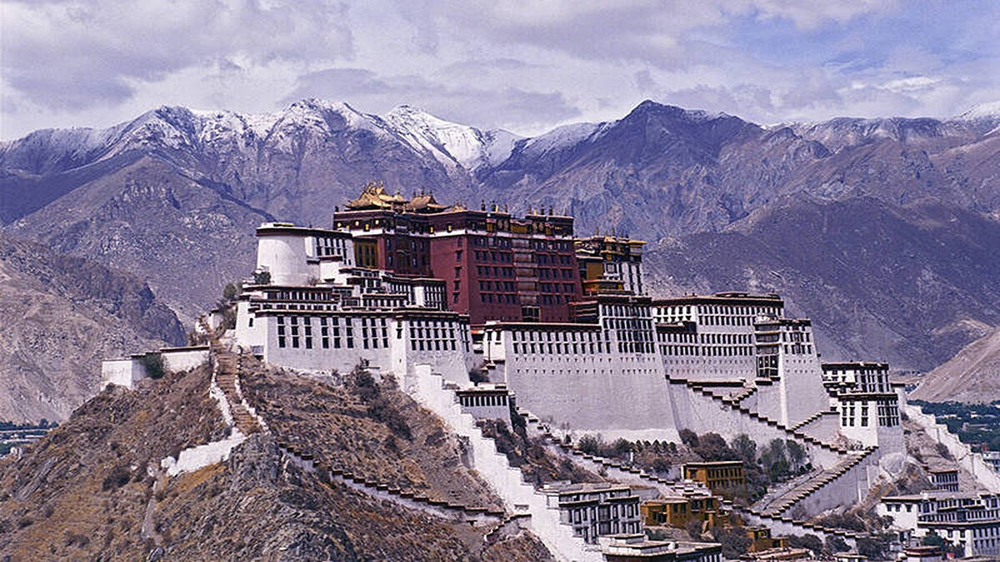
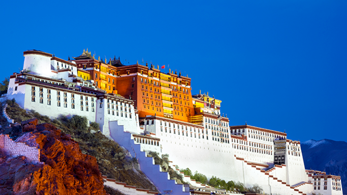
Potala Palace is the most sacred site to all Tibetans and Buddhists from home and abroad. It was firstly built as the palace of Songtsen Gampo (617-650), and then became the residence of Dalai Lamas after being rebuilt in the 17th century. Located in the center of Lhasa city, the Potala Palace is very distinctive with its white and red color scheme. It holds abundant precious historical relics, from jewelry to Buddhism scriptures. Furthermore, it represents the highest artwork level of Tibetan style architecture. The number of visitors per day is restricted, so please ensure you check the availability and reserve the entrance ticket in advance.
5. Summer Palace, Beijing
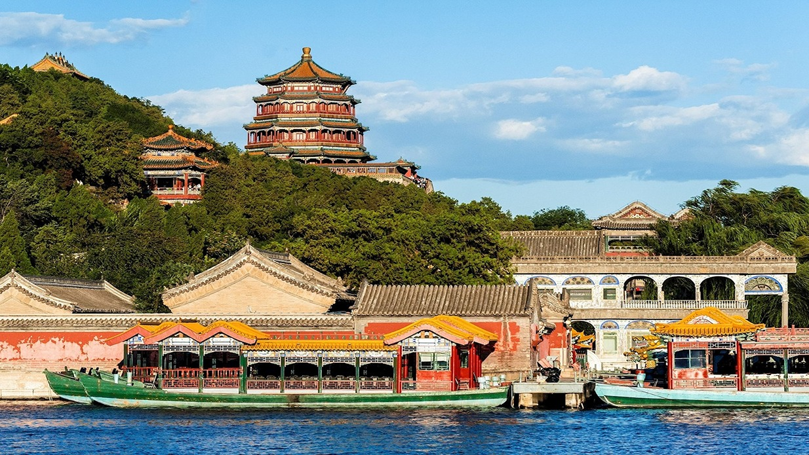
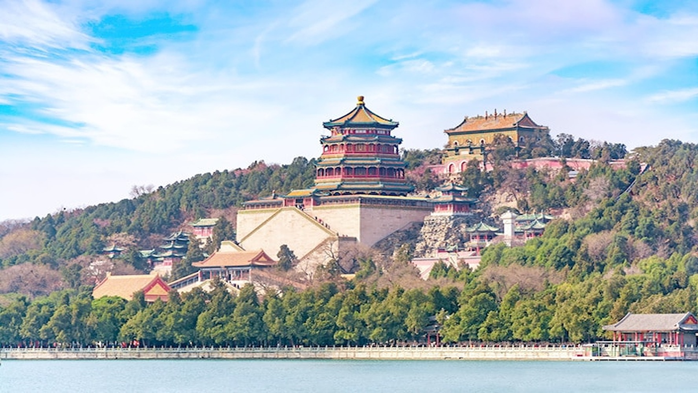
Known as the summer retreat for Empress Dowager Cixi, the Summer Palace is the template of all Chinese classic gardens. It is also the largest royal garden in the world. Having been destroyed and rebuilt several times, the whole complex consists of numerous gardens, gazebos, and pavilions. Due to the size, you can easily spend 2-4 hours inside, walking along the Kunming Lake, admiring the painted roof at the long corridor, climbing Wanshou Hill, and visiting Dehe Garden. The scenery, the design and architectural style, and the stories of the Qing Dynasty will amaze you. As it is one of the most popular sightseeing spots in Beijing, you may find it extremely crowded, especially during public holidays. So try to avoid the peak seasons.
6. Temple of Heaven, Beijing
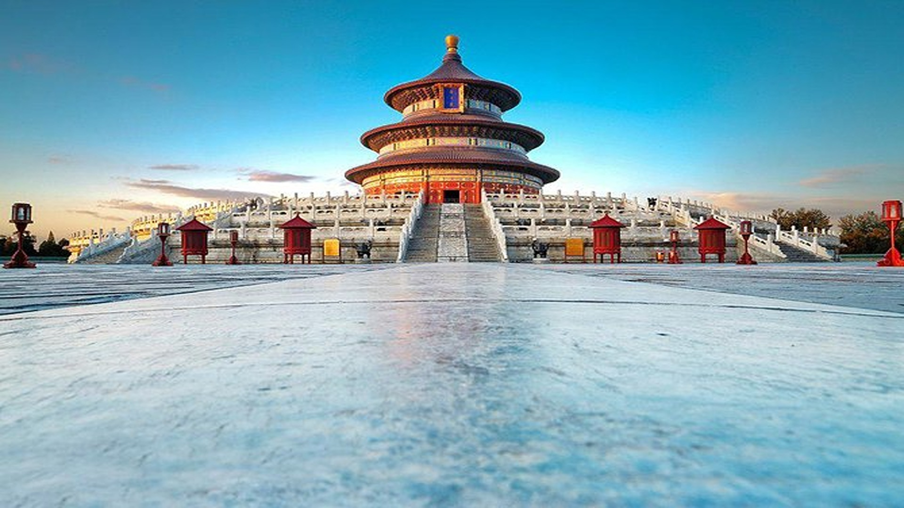
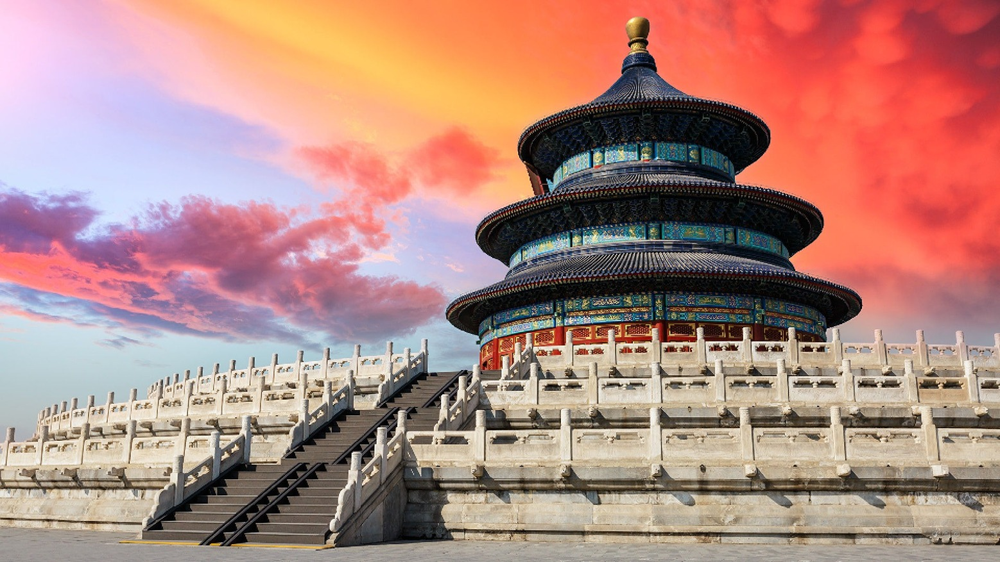
The Temple of Heaven was the venue built by Emperor Yongle during the Ming Dynasty in 1420 for emperors to worship. It is a large complex containing several buildings constructed following Chinese traditional religious principles. The most impressive one is The Hall of Prayer for Good Harvests where emperors would perform sacrifices to pray for a good harvest year. The Imperial Vault of Heaven and The Circular Mound Altar are both truly authentic Ming and Qing architectural structures. The entire park area is now a popular place for local people to practice their morning exercises.
7. Longmen Grottoes, Luoyang, Henan Province
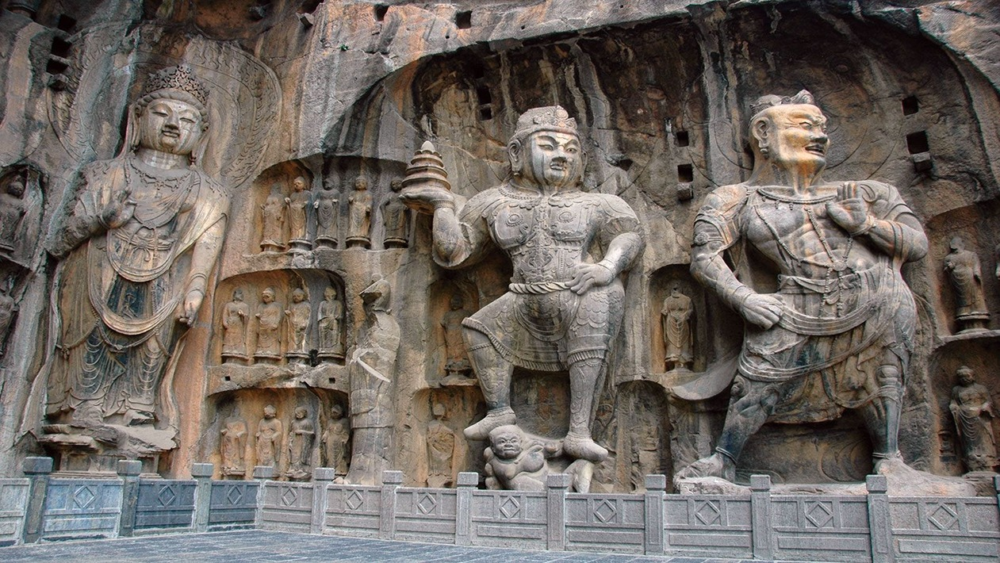
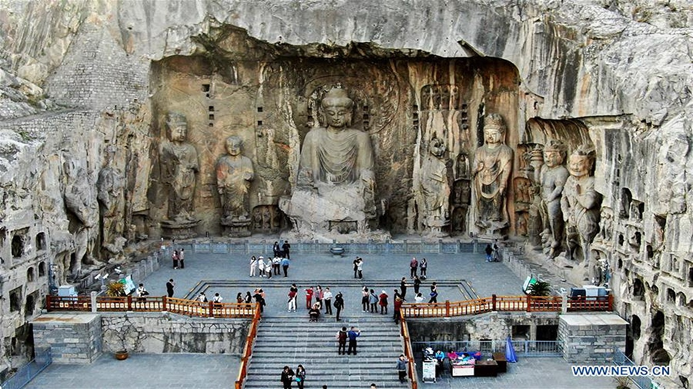
Located in Luoyang, Henan Province located in central China, the Longmen Grottoes is famed as the biggest grottoes in China, containing the most amount of Buddha sculptures. Firstly being built in 493AD, this huge project lasted about 1,400 years and ended during the Qing Dynasty.The carvings and workmanship are outstanding. Ancient Buddha sculptures dot the caves yielding up surprises at every turn. About 25% of the 100,000 statues are undamaged. The largest statue was commissioned by the first female emperor of China - Wu ZeTian. The grottoes extend for more than one kilometer along the bank of the Yihe River. It’s well worth crossing the bridge to view the grotto from the other side to get a wide-angle perspective of the whole grotto. It is recommended to visit the site in the morning, as when the sun goes down at the back of the mountain, the statues are darkened.
8. Mogao Grottoes, Dunhuang, Gansu Province
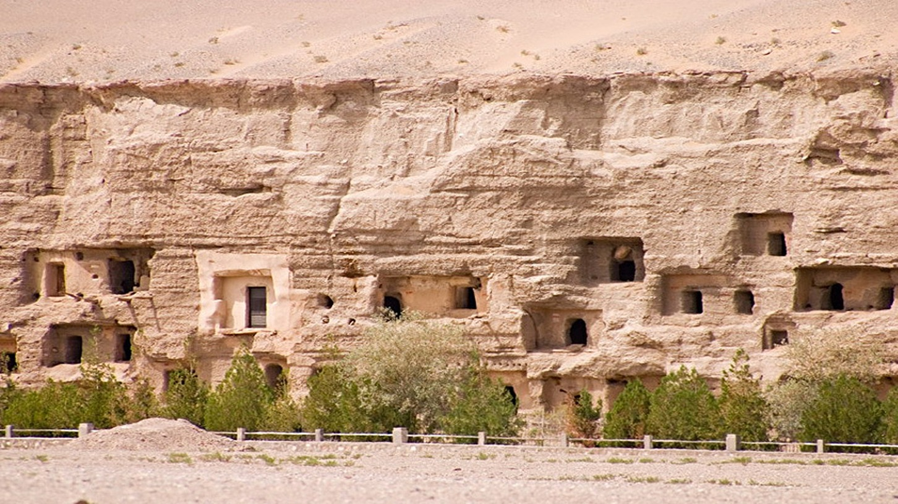
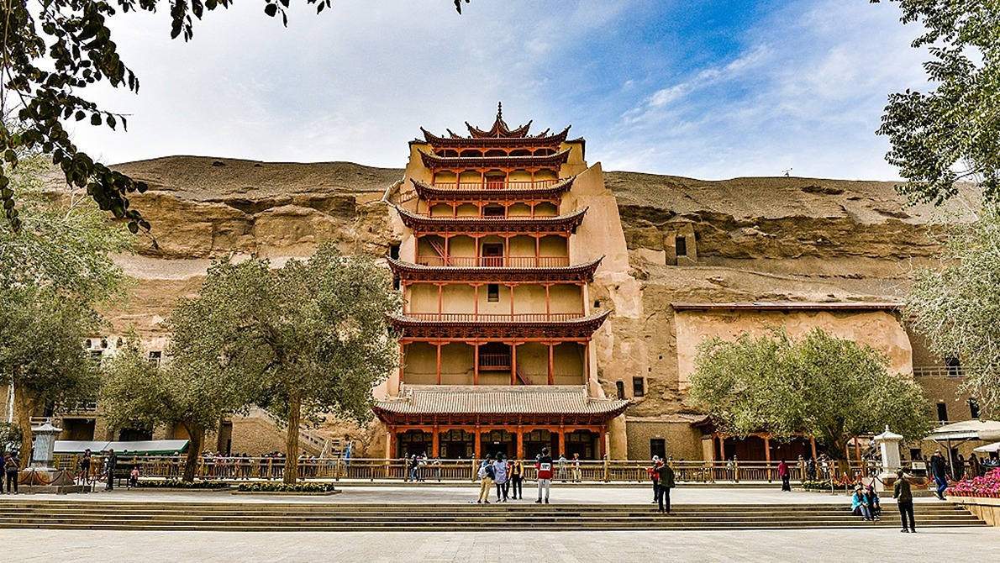
Along with the Longmen Grottoes, Mogao is one of the top 5 grottoes in China. It is located in Dunhuang, Gansu Province in the far west of China. Mogao Grottoes is most famous for the colorful murals in different caves. These Buddha sculptures, murals, and paintings represent a unique artistic masterpiece of Chinese art. Due to several invasions, some are badly damaged. To protect the artwork from being overwhelmed by visitors, the site has issued a strict visiting procedure. You need to book tickets online in advance and follow the site guides to enter the caves. Only a few (mostly eight) caves are open for visitors, hence the trip should be well-planned in advance. Taking photos is strictly prohibited inside the caves.
9. Three Confucius Sites, Qufu, Shandong Province
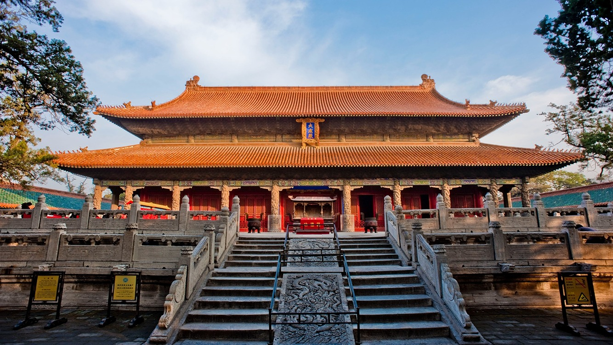
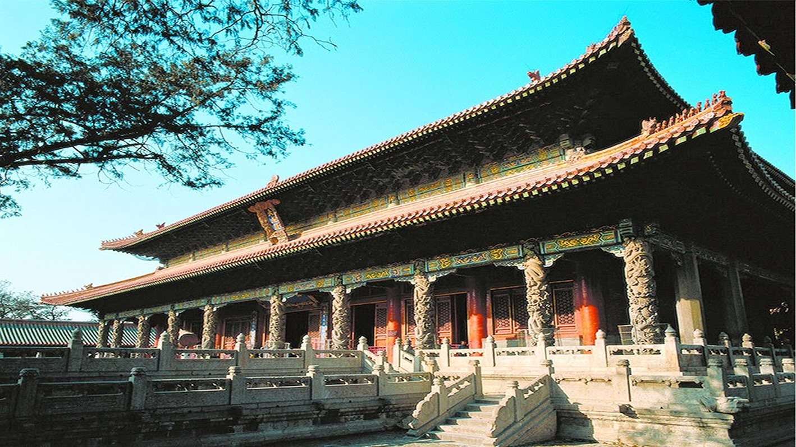
Qufu in Shandong Province is the hometown of Confucius. The San Kong Site (Three Confucius Sites) includes the Confucius Temple, Mansion, and Cemetery. The former two sites are next to each other, and the third one is in a 15-minute walk. There are Confucius temples in many cities in China, but this one is the biggest. Lots of school children visit to pray for good performance in school as Confucius is seen as the greatest educator and philosopher. For historians and scholars, it’s the most sacred place to study Confucianism and Chinese history.
10. Shaolin Temple, Dengfeng, Henan Province
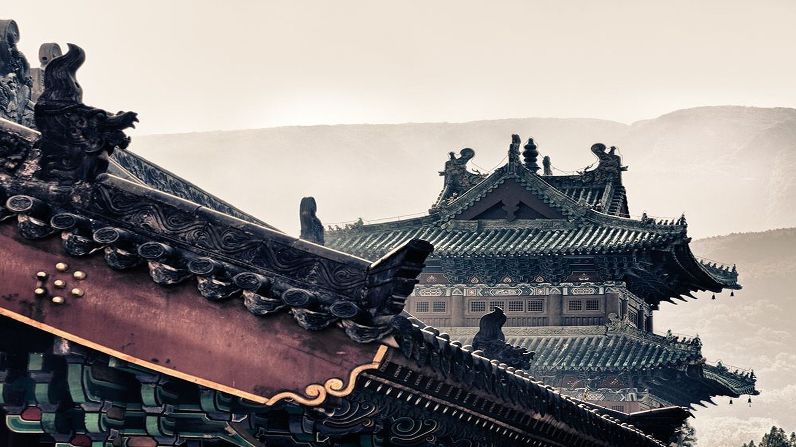
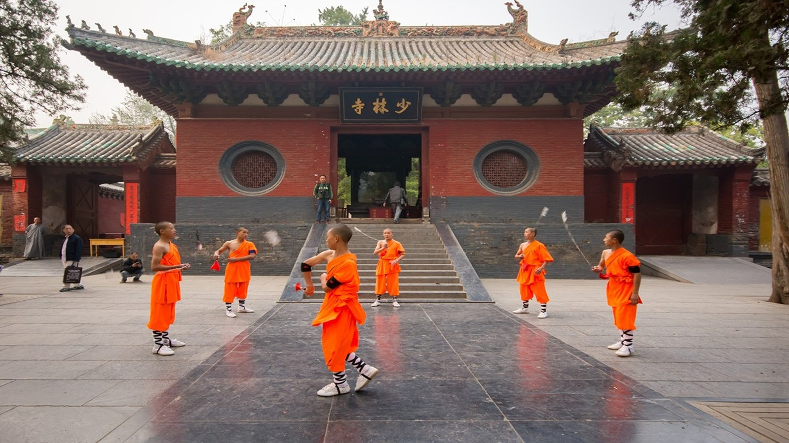
Shaolin Temple has become a very popular spot for Kungfu lovers ever since Bruce Lee and Jackie Chan’s Kungfu movies were big hits in the west. As the birthplace of both Chinese martial arts and Zen Buddhism, it receives hundreds of millions of pilgrims and visitors from home and abroad every year. The temple comprises multiple buildings and courtyards, the training center, the show hall, and the Pagoda Forest. It is the place to learn the history of martial arts (Kungfu) and how Zen Buddhism spread across China. Watching the young monks learning and practicing is a lot more real and interesting than watching a Kungfu fiction or an acrobatic show. You can reach the temple by driving from Zhengzhou, the capital city, or Luoyang, where the Longmen Grottoes are located.
For history fanatics, China is the right choice. We can combine some of these historical sites to tailor-make a comprehensive tour or we can adjust the tour to suit your interests and leisure. There is much more to explore and discover, such as Pingyao Ancient City, Ancient Water Towns in eastern China, ancient villages in Yunnan Province, the minority tribes, and their culture. Come, travel, and discover with China Educational Tours, you will be amazed by our diverse historical sites, architecture, and culture.